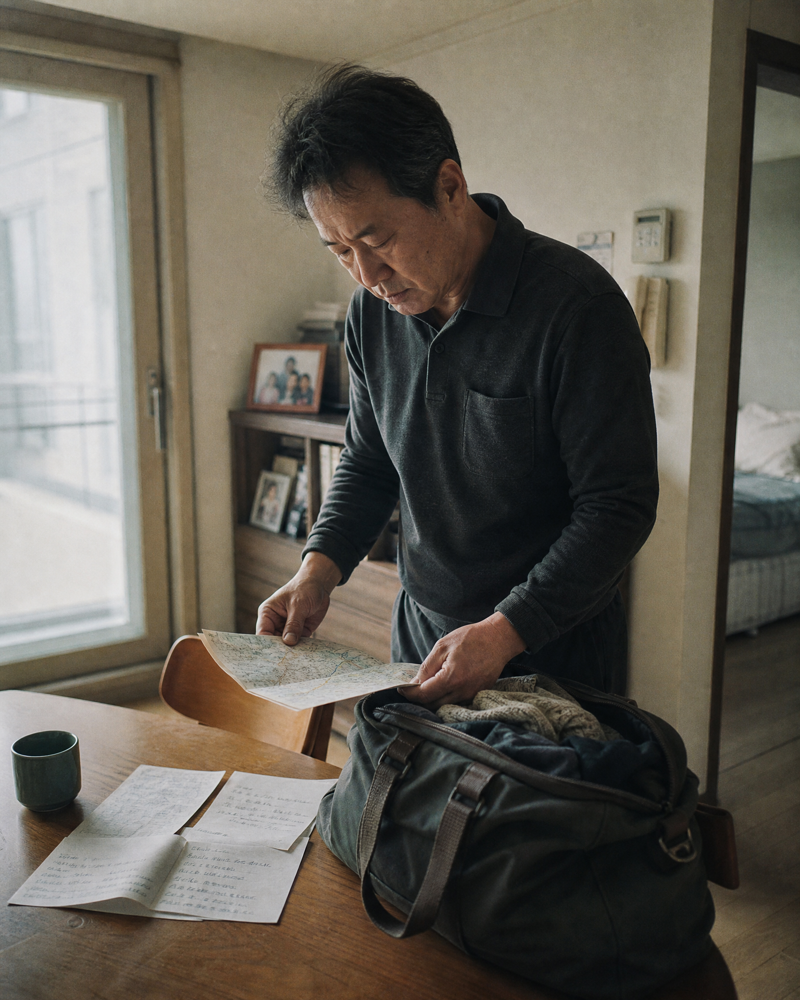
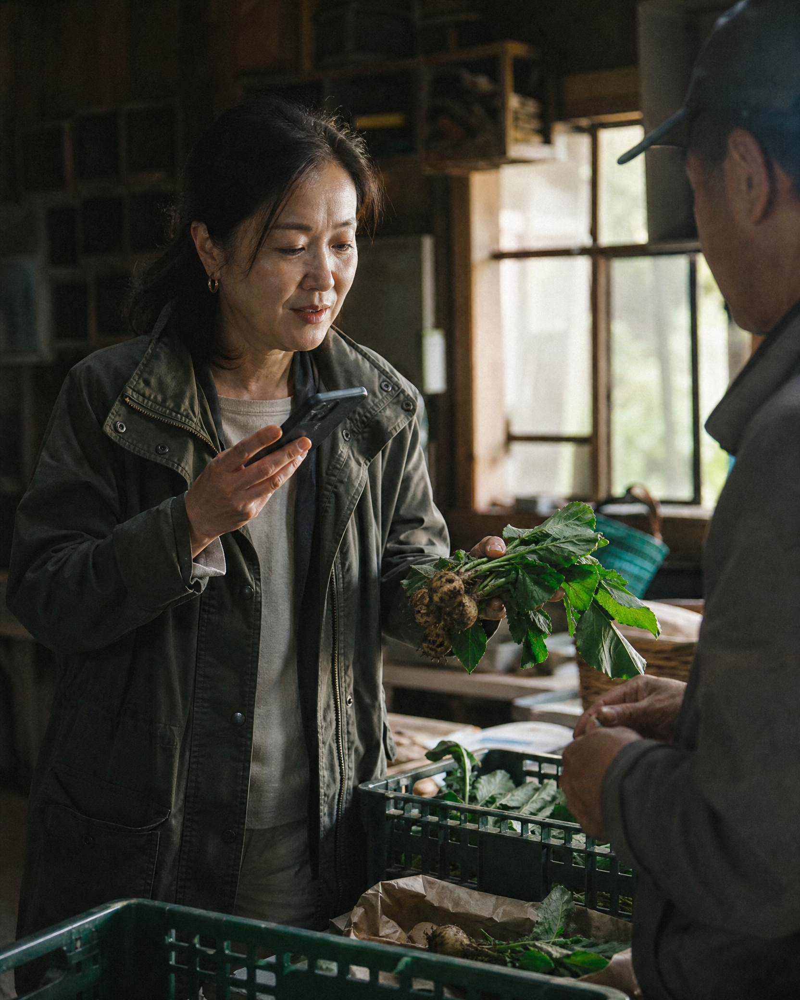
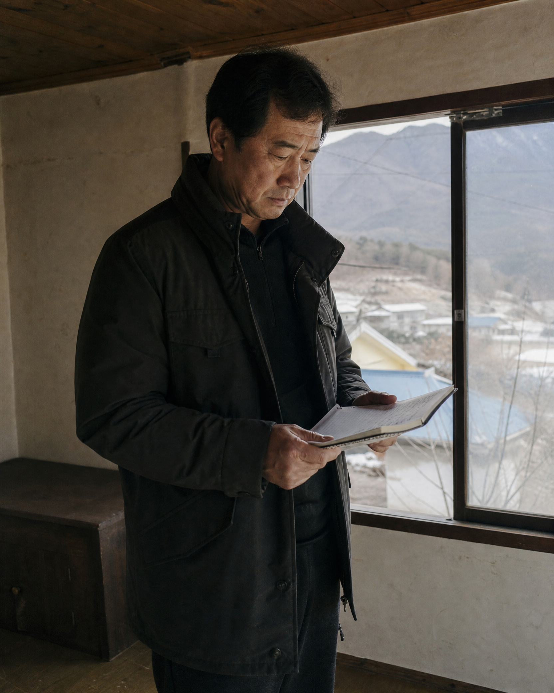
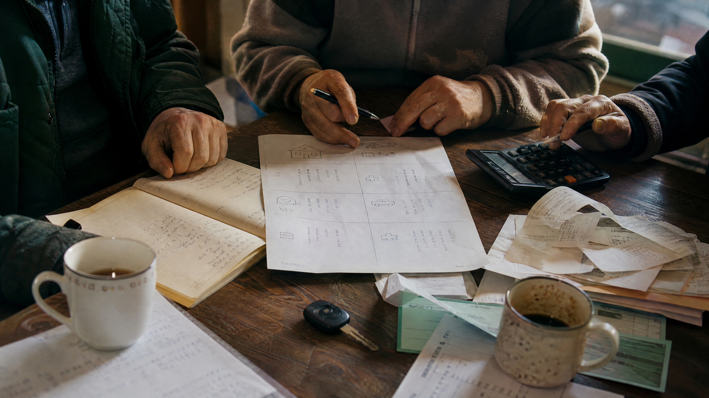

01 / 일과 생계일을 이어갈 수 있을까?
지역에서 할 수 있는 일과 나의 기술이 만나는 지점을 찾습니다.
OBSERVATIONAL DOCUMENTARY PROJECT
집을 사기 전에, 인생을 옮기기 전에
귀촌을 권하지 않습니다. 세 명의 도시인이 직접 살아보고, 일하고, 사람을 만나고, 돈을 계산한 뒤 자신의 다음 삶을 결정합니다.
THE QUESTION
“나는 가평에서 실제로 살게 되면 어떤 삶을 살 수 있을까?”
사진 한 장의 풍경과 이주 지원금만으로는 알 수 없는 것들이 있습니다. 출퇴근 시간, 장을 보는 거리, 일의 감각, 이웃과의 첫 대화, 한 달 생활비를 직접 경험해야 질문이 구체적인 결론이 됩니다.
THREE QUESTIONS
정답을 정해놓고 떠나는 여행이 아니라, 각자의 질문을 들고 가평의 생활 속으로 들어갑니다.

01 / 일과 생계지역에서 할 수 있는 일과 나의 기술이 만나는 지점을 찾습니다.

02 / 주거와 비용집, 교통, 장보기, 병원까지 실제 숫자로 생활을 계산합니다.

03 / 관계와 소속마을의 속도와 사람들의 온도 속에서 나의 자리를 확인합니다.
FIELD OS / HUMAN FIRST
사진 한 장, 1분 음성, 세 개의 점수만 남겨도 됩니다.
현장 기록은 생활 주제로 정리되지만, 감정과 맥락의 최종 해석은 사람과 참가자가 맡습니다. AI가 이주 가능성이나 사람의 진정성을 판단하지 않습니다.
THE ANSWER IS NOT PRESET
LIVING EXPERIMENT

관찰 다큐멘터리는 생활 실험에서 시작됩니다.
A LIFE, VERIFIED
우리는 지역을 홍보하는 영상보다, 사람이 지역 안에서 자신의 다음 장면을 발견하는 과정을 기록하고 싶습니다.
JOIN THE PROJECT
참여·출연·기관 협력 중 원하는 방식을 남겨주세요. 담당자가 내용을 확인한 뒤 안내드립니다.